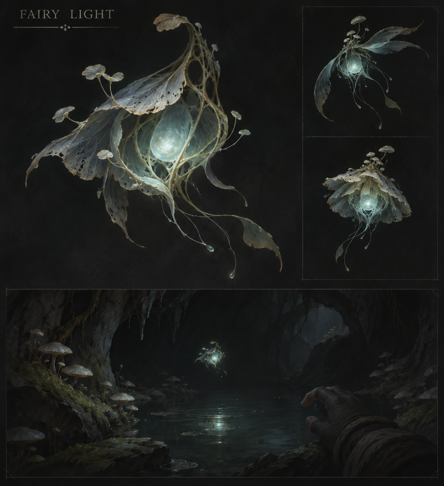
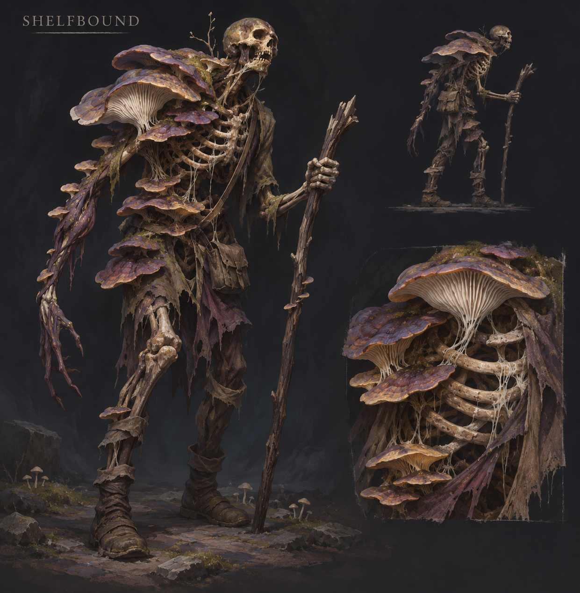
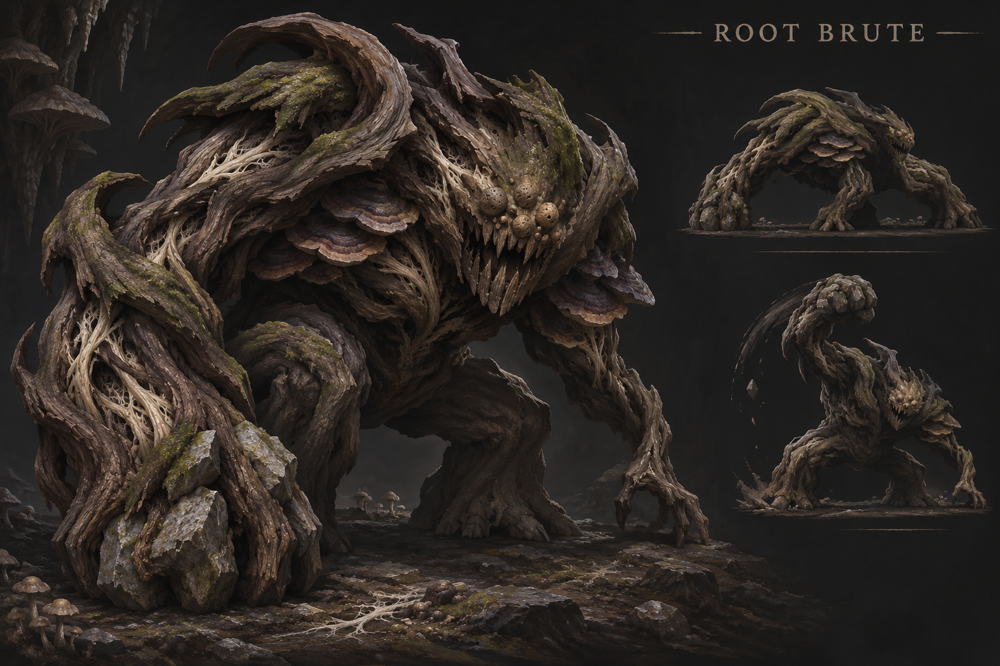
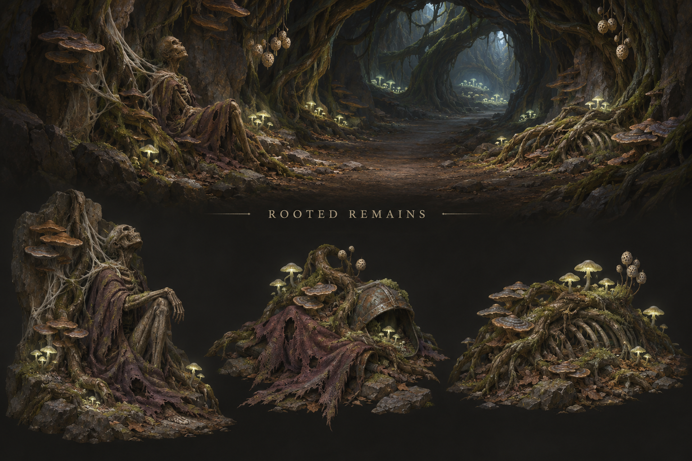
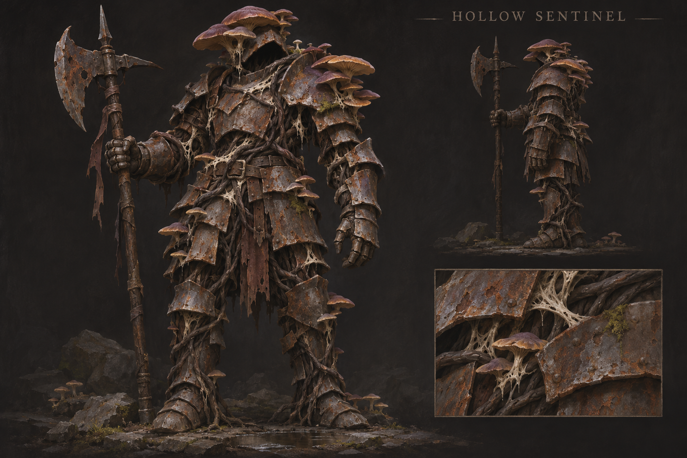
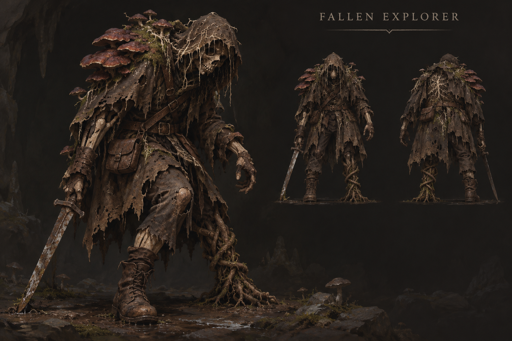
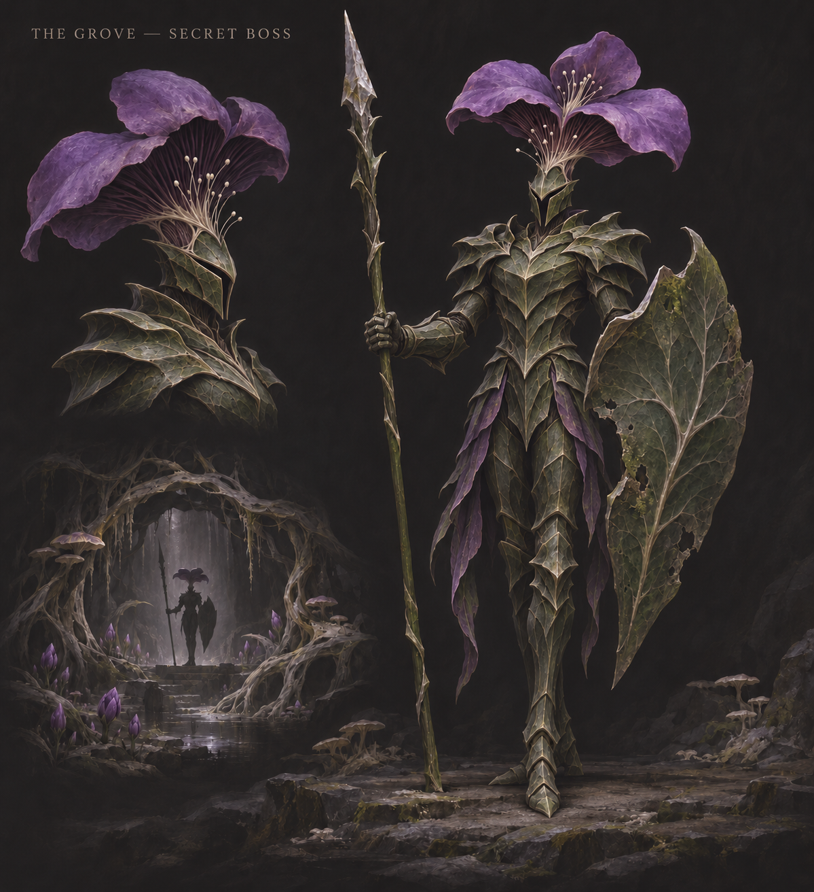

#1 · Fairy light
Floating presence; not necessarily hostile.

#2 · Shelfbound
Tall shelf-fungus creature with exposed old ribs.

#3 · Root Brute
Low aggressive brute with a heavy striking forelimb.

#4 · Regional reward armour
Idea only, as requested. Aged green plate, organic branch edging and selected helm or shoulder motifs may inform special regional rewards. No concept image, item stats, drops or lore assigned.
#5 · Rooted Remains — decor
Static cave-wall and floor remains, not another mobile enemy.

#6 · Hollow Sentinel — armoured elite
Heavy plate, empty helmet and poleaxe.

#7 · Fallen Explorer
Stooped former explorer with short sword and ragged coat.

#8 · Flower Knight — masculine v2
Selected masculine revision. Elegant duelist with intact purple bloom, spear and leaf shield.

Superseded boss v1 — comparison only
View earlier proportionsThe separately explored optional character was rejected and is excluded. User reference originals are not vendored. Generated plates are preserved unchanged; superseded boss v1 is comparison only.